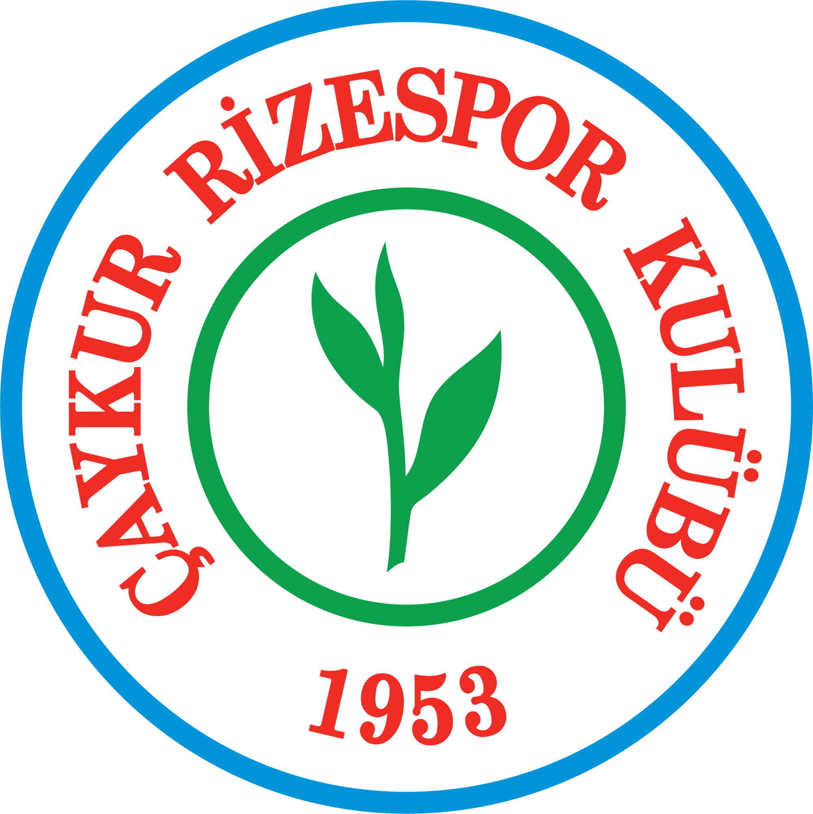

Kuruluş: 1953
Çaykur Rizespor, 1953 yılında Rize İdman Yurdu adıyla kurulmuş, Türkiye'nin köklü futbol kulüplerinden biridir. Yeşil-mavi renkleri taşıyan kulüp, Karadeniz Bölgesi'nin en başarılı takımlarından biridir.
Kulüp, tarihinde Türkiye Süper Lig'de mücadele etmiş, Avrupa kupalarında yer almış ve bölgesel şampiyonluklar kazanmıştır. Çaykur Didi Stadyumu'nda oynayan takım, tutkulu taraftar kitlesiyle her zaman güçlü bir birliktelik sergilemiştir.
Rize İdman Yurdu adıyla kurulan kulüp, Rize'nin futbol tarihine yön verdi.
Çaykur'un sponsorluğuyla birlikte Çaykur Rizespor adını aldı ve büyük bir ivme kazandı.
2. Lig'de üst sıralarda yer alarak bölgesel şampiyonluklar elde etti.
Süper Lig'e yükseldi ve büyük takımlarla mücadele ederek önemli deneyimler kazandı.
Çaykur Rizespor, taraftarlarının desteğiyle Süper Ligte mücadelesine devam ediyor.
Çaykur Rizespor taraftarları, Karadeniz'in misafirperverliği ve tutkusuyla her zaman takımın yanında yer alır.
Stadyumda yankılanan Horon ezgileri ve marşlar, maç atmosferini unutulmaz kılar.
Çaykur Rizespor sevgisi, Karadeniz'den başlayarak tüm Türkiye'ye yayılmış bir tutkudur.